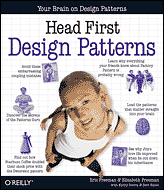

COURSE DESCRIPTION
Introduces the basic concepts and the modern tools and techniques of Software Engineering. Emphasizes the development of reliable and maintainable software via system requirements and specifications; software design methodologies including object-oriented design, implementation, integration, and testing; software project management; life-cycle documentation; software maintenance; and consideration of human factor issues.
COURSE TOPICS
- Waterfall model, together with its variations and improvements
- The UML (Unified Modeling Language)
- Requirements Analysis
- Use Case Modeling
- Object Modeling
- Functional Modeling
- Dynamic Modeling using State Diagrams, Sequence Diagrams, and Activity Diagrams
- Specification Documents
- Design Documents
- Testing -- Black Box, Glass Box
- Test Plan Documents
- Project Planning -- Pert Charts, Gantt Charts
- Software Engineering tools
- Oral and Written Communication
PREREQUISITES
C or higher: CSE 219 or CSE 260; CSE 320; CSE 305 or CSE 306; U4 standing; CSE major.
COURSE GOALS
At the end of the course you should have the following knowledge and skills:
- An ability to perform project planning, requirements analysis, and system/test design.
- An ability to work as a team to produce software systems that meet specifications while satisfying an implementation schedule.
- An ability to produce professional quality oral/written presentations of system designs, reviews, and project demonstrations.
- An understanding of ethical issues in software design and computing.
LECTURE
Tuesdays & Thursdays
2:30pm - 4:00pm
Javits 101
INSTRUCTOR
|
Richard McKenna richard@cs.stonybrook.edu 216 New Computer Science Building Office Hours:
|

|
TEACHING ASSISTANTS
 Vasia Patov vasiapatov@gmail.com Office Hours in New CS 156: --Tuesdays, 1pm-2:30pm |
OFFICE HOURS GRID
| Start Time | End Time | MONDAY | TUESDAY | WEDNESDAY | THURSDAY | FRIDAY |
|---|
COURSE PLATFORMS
All teams will use the Java Programming language and Google App Engine and related technologies for creating our Web apps. Note that teams will have some choice regarding front-end libraries, but for the most part we'll be using Servlets and JSPs along with JSTL and EL. As far as the development platform is concerned, teams have three choices:
- Apache Maven and the text editor of your choice.
- Eclipse for Java EE Developers in cooperation with the Google App Engine eclipse Plugin. Note that one should match the plugin with the version of eclipse. Above, both the IDE and the plugin are for Luna (4.4).
- JetBrains' IntelliJ IDEA is a great IDE ready made for building Google App Engine apps. Temporary academic licenses are available for free.
In addition to these tools, we'll use tools for Project Management and UML Modeling which will be discussed as the semester progresses.
TEXTBOOK
 Programming Google App Engine with Java
Programming Google App Engine with Java
by Dan Sanderson
Published by O'Reilly Media, Inc. 2016
Print ISBN 1-4919-0020-2
ONLINE TEXTBOOKS
 Java Servlet & JSP Cookbook
Java Servlet & JSP Cookbook
by Bruce W. Perry
Published by O'Reilly Media, Inc. 2004
Print ISBN-13: 978-0-596-00572-6
AND
Head First Object Oriented Design and Analysis
by Brett McLaughlin, Gary Pollice, David West
Published by O'Reilly Media, Inc. 2006
Print ISBN-10: 0-596-00867-8
Print ISBN-13: 978-0-596-00867-3
AND
Head First Design Patterns
by Eric T Freeman, Elisabeth Robson, Bert Bates, Kathy Sierra
Published by O'Reilly Media, Inc. 2004
Print ISBN-10: 0-596-00712-4
Print ISBN-13: 978-0-596-00712-6
ATTENDANCE
CSE 308 is a different sort of a class in two regards. 1) Because your primary grade is your team project, students are heavily dependent on the performance of their teammates in the project, and so they depend on their teammates being familiar with the technologies, involved in the project development, and available for team discussions. 2) As the semester progresses there will be very few straight lectures. Lecture time will in fact become an opportunity for teams to meet and make decisions as well as get instructor feedback. In fact, teams will have at least a brief meeting every single lecture. So, attendance is mandatory. Just as in the real world, attendance will be taken for every single meeting. Students who miss more than 3 lectures over the course of the semester will incur a grade penalty, with every absence thereafter increasing the penalty. In the real world there is an expectation of professionalism and this starts with being in attendance for all meetings.
COURSE COMPONENTS
- Team Building Exercise - At the start of the semester students will be divided up into teams and asked to solve a programming problem as a team. It will require learning new technologies and assigning work. Team members will be assigned grades based on the contributions they made to the finished product.
- Midterm Exam - This exam will test each student's understanding of the core course concepts as well as the technologies used for the project.
- Group Project - Students will work in teams of four to create a full fledged Web application. The expectations for this app is that it is great. It should be look professionally designed and operate as intended (i.e. bug free). There will be a number of components to this project:
- Grant Proposal - This semester teams will write a grant proposal as though they are applying for funding in response to an RFP. This is something one might do in academia as a professor or researcher.
- Requirements Specification Documentation & Presentation - Student teams will reveal their vision for the assigned Web app assignment in a 30 minute presentation and will submit formal Requirements Analysis documentation that will include formal UML Use Case diagrams and front-end mockups. Note that teams are expected to bring their own creativity to the project and are encouraged to think outside the box.
- Software Design Documents - Student teams will use UML to specify their project design using the aforementioned technologies. This will include both front-end and back-end components. These designs will then be presented to the instructor in 1 hour presentations where they will be meticulously reviewed.
- Progress Reviews - Part of Software Engineering is developing a plan of action for development. Teams will do this by creating their own development schedule, and then, with the use of Project Management Software, will monitor and update progress towards their project's completion. Teams will receive grades based on completion of project targets and through these progress reviews, will receive valuable feedback regarding their site's look, feel, interactivity, services, etc. Note that for each of these weekly reviews, teams will be asked to present their progress to the TA by appointment and the instructor in class.
- Completed Deliverables & Final Presentation - At the end of the semester each team will deploy their completed project and present their work to an audience so as to showcase their application. Think of it as a trial run for the New York Tech Meetup, which is a monthly New York event where start-ups make a case to venture capitalists to fund their projects.
- Grant Proposal - This semester teams will write a grant proposal as though they are applying for funding in response to an RFP. This is something one might do in academia as a professor or researcher.
GRADING BREAKDOWN
| Team Building Exercise | 10 % |
| Midterm Exam | 30 % |
| Group Project | 60 % |
| 100 % |
Note CEAS Policy: The Pass/No Credit (P/NC) option is not available for this course.
ACADEMIC DISHONESTY
Read This! You may discuss the homework in this course with anyone you like, however each student's submission, including written material and coding, must be his or her own work, and only his or her own work. Any evidence that written homework submissions or source code have been copied, shared, or transmitted in any way between students (this includes using source code downloaded from the Internet or written by others in previous semesters!) will be regarded as evidence of academic dishonesty. Additionally, any evidence of sharing of information or using unauthorized information during an examination will also be regarded as evidence of academic dishonesty.
The College of Engineering and Applied Sciences regards academic dishonesty as a very serious matter, and provides for substantial penalties in such cases, such as receiving an `F' grade, or expulsion from the University. For more information, obtain a copy of the CEAS guidelines on academic dishonesty from the CEAS office.
Be advised that any evidence of academic dishonesty will be treated with utmost seriousness. Those involved will be prosecuted to the fullest extent permitted by the University and College laws. If you have a situation that may tempt you into doing something academically dishonest, resist the urge and speak with your instructor during office hours for help.
SPECIAL ASSISTANCE
If you have a physical, psychological, medical or learning disability that may impact on your ability to carry out assigned course work, I would urge that you contact the staff in the Disabled Student Services office (DSS) in the ECC building (where the Computer Store used to be), 632-6748v/tdD. DSS will review your concerns and determine with you what accommodations are necessary and appropriate. All information and documentation of disability are confidential.
If you need general computer help, you can use the Computer Science Help Desk. Services offered include setting up an account on a department server, using Windows NT, using a browser, and connecting to the campus network. The Help Desk office is located in the SBCS Office - Room 2110.


Web page created and maintained
by Richard McKenna